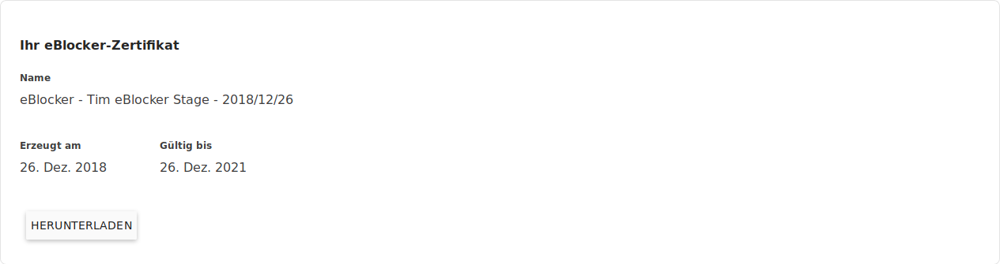
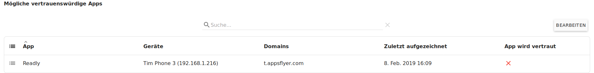
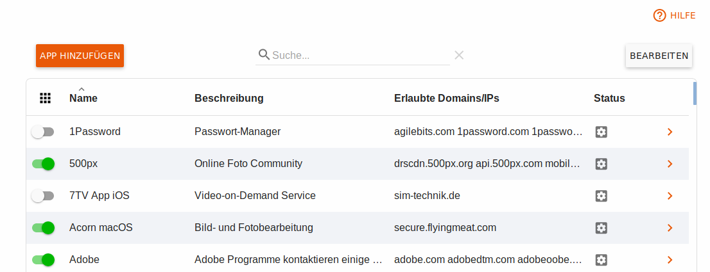
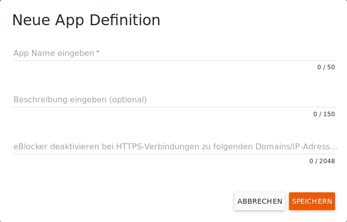
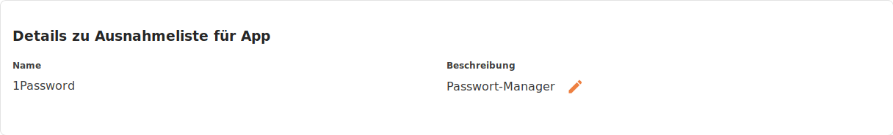
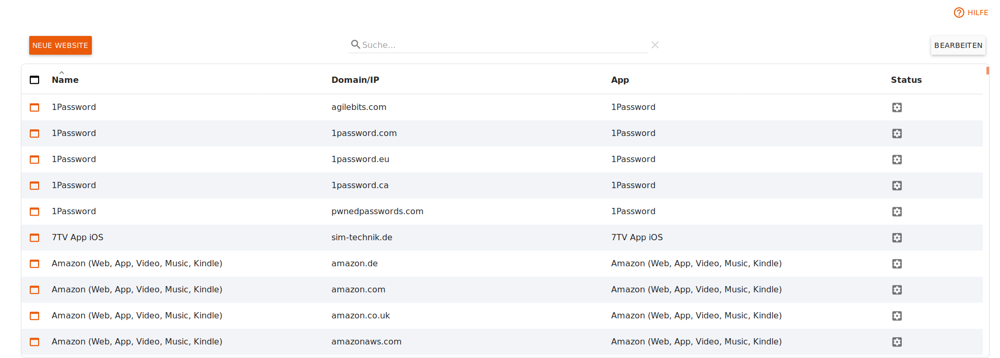
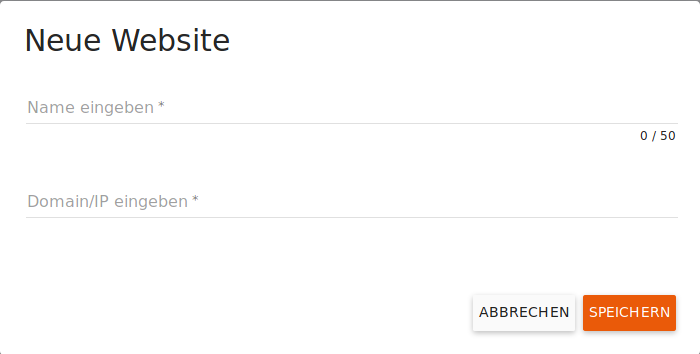

eBlocker Hilfe > Wissensdatenbank > eBlocker Menü
eBlocker Base ✕ / eBlocker Pro ✓ / eBlocker Family ✓
Diese Seite ist weiter unterteilt in die folgenden Abschnitte:
Wichtig:
Wenn Sie diese Funktion aktivieren, müssen Sie mit erweiterten Einstellungen Ihrer Geräte vertraut sein und ein Verschlüsselungs-Zertifikat auf den Geräten hinterlegen, um den Datenstrom durch den eBlocker analysieren zu lassen.
Vorwort:
SSL steht für Secure Sockets Layer und ist ein Protokoll, um die Kommunikation „Ende-zu-Ende“ zwischen zwei Kommunikationspartnern zu verschlüsseln. Manchmal wird Ihnen vielleicht auch die Abkürzung TLS begegnen (TLS steht für Transport Layer Security). Sie bezeichnet im Grunde das gleiche wie SSL. Wird das Standard-Webprotokoll HTTP mit Hilfe von SSL verschlüsselt, so wird es als HTTPS bezeichnet. Sie erkennen eine verschlüsselt geladene Seite daran, dass die URL mit https:// beginnt. Viele Browser zeigen in der Adresszeile zusätzlich ein grünes Schloss an.
Viele Webseiten, insbesondere von Banken und Online-Shops sind heute mit SSL-Verschlüsselung geschützt. Dadurch können Sie sicher sein, dass Sie tatsächlich mit dem Anbieter kommunizieren dessen URL Sie aufgerufen haben und dass kein Dritter Ihre eingegebenen Daten verändern oder mitlesen kann. Allerdings verwenden nicht nur seriöse Shops und Banken SSL. Auch Tracking- und Werbeanbieter sammeln ihre Daten immer öfter über HTTPS/SSL. Ihre Profildaten werden dann zwar verschlüsselt zum Trackingserver geschickt, aber das hindert den Datensammler natürlich nicht daran, weiterhin ein detailliertes Profil von Ihnen zu erstellen.
Sobald die HTTPS-Unterstützung im eBlocker aktiviert wird, generiert jeder eBlocker ein eindeutiges Geräte-Stammzertifikat und einen privaten Schlüssel. Dieses Zertifikat wird genutzt, um die Kommunikation zwischen Ihrem Gerät und dem eBlocker zu verschlüsseln, wenn der eBlocker eine mit SSL geschützte Webseite lädt.
Sobald HTTPS aktiviert wurde, terminiert der eBlocker die verschlüsselte Verbindung, damit der Datenstrom analysiert werden kann. Der eBlocker ist damit das Ende der „Ende-zu-Ende Verschlüsselung“. Da der Browser bei HTTPS eine verschlüsselte Verbindung erwartet, verschlüsselt der eBlocker anschließend die Kommunikation zu Ihrem Endgerät. Dazu ist es notwendig einmalig das sogenannte Sicherheitszertifikat Ihres eBlockers erst in Ihrem Betriebssystem und dann gegebenenfalls in den Browsern mit einem eigenen Zertifikatsspeicher aufzunehmen. Dieses Zertifikat wird manchmal auch als Zertifikat für Zertifizierungsstellen, als Stammzertifikat oder als Root-Zertifikat bezeichnet.
Wir haben weder Zugang zu Ihrem privaten Schlüssel noch zu Ihrem Gerät und haben alles dafür getan, um den eBlocker vor Hackern zu schützen – aber natürlich gibt es keine 100 prozentige Sicherheit.
Wir bieten die HTTPS-Unterstützung als Option an. Sollten Sie sich unwohl damit fühlen, dass der eBlocker die HTTPS-Verbindung entschlüsselt, aktivieren Sie diese Option bitte nicht.
Ohne die HTTPS-Unterstützung schützt Sie der eBlocker durch seine Domain Blocker.
Lesen Sie hier gegebenenfalls den Unterschied zwischen Pattern (Muster) und Domain Blocker.
Aktivieren Sie hier die HTTPS Funktion für Ihren eBlocker, indem Sie den Schalter nach rechts schieben.

Bitte beachten Sie, dass das Zertifikat erst in Ihrem Betriebssystem und dann gegebenenfalls noch in Browsern mit eigenem Zertifikatsspeicher hinterlegt werden muss.
Wenn Sie auf den Button HTTPS Assistent klicken, wird Sie ein Assistent bei dem Hinterlegen des eBlocker Zertifikats begleiten. Der Link Anleitungen führt Sie zu einem Beitrag, in dem wir Ihnen für die wichtigsten Betriebssysteme das Hinterlegen des eBlocker Zertifikats Schritt für Schritt beschrieben.
Von hier aus können Sie auch das eBlocker Zertifikat mit Hilfe des HTTPS Assistenten hinterlegen. Der Link Anleitungen führt Sie ebenfalls zu einem Beitrag, in dem wir Ihnen für die wichtigsten Betriebssysteme das Hinterlegen des eBlocker Zertifikats Schritt für Schritt beschrieben.

Hier können Sie einige Informationen zu Ihrem Zertifikat einsehen.

Wenn Sie auf den Button Herunterladen klicken, können Sie das eBlocker Zertifikat auch auf Ihren Rechner speichern. Das kann notwendig sein, wenn Sie zum Beispiel eine App mit einem eigenen Zertifikatsspeicher benutzten (Beispiel: Der Mailclient Thunderbird).
Das eBlocker Zertifikat wird vier Wochen vor dem Ablauf automatisch erneuert.

Nach der Erneuerung muss das neue Zertifikat wieder auf allen Geräten aufgenommen werden!
Sie können das eBlocker Zertifikat auch jeder Zeit manuell erneuern, wenn Sie auf den Button Jetzt erneuern klicken.
Hier können Sie den Datenstrom einzelner Anwendungen mit einem einfachen Werkzeug untersuchen und gegebenenfalls Ausnahmen erstellen, sofern eine App bzw. eine Webseite bei aktivierter HTTPS-Unterstützung nicht korrekt arbeitet.

Die aufgezeichneten HTTPS Verbindungsfehler helfen Ihnen dabei festzustellen, welche Apps betroffen sind, bzw. welche Domains-/IP-Adressen als Ausnahmen für die jeweilige App definiert werden sollten.
Der eBlocker kann Domains erkennen, welche einer schon vorhandenen vertrauenswürdigen App Ausnahme hinzugefügt werden kann. In der Aufzeichnung wir Ihnen auch angezeigt von welchem Gerät und zu welcher Zeit der Verbindungsfehler aufgezeichnet wurde.

Mit einem Klick auf den Button Bearbeiten können Sie die Domain dieser App Ausnahme hinzufügen. Anschließen klicken Sie auf den Button App vertrauen, um Ihre Auswahl zu speichern.
In der Liste der Vorgeschlagene Ausnahmen zeigt der eBlocker Verbindungsfehler an, welche keiner vorhandenen App Ausnahme zugeordnet werden konnten.

Mit einem Klick auf den Button Bearbeiten können Sie die Domain auswählen, welche Sie speichern möchten.
Es stehen Ihnen drei Optionen zum Speichern zur Verfügung:
Neue App anlegen
Mit dieser Option legen Sie eine neue App Ausnahme an.

Vergeben Sie einen Namen für die App Ausnahme und geben Sie gegebenenfalls eine kurze Beschreibung ein.
Die Ausgewählten Domains werden Ihnen hier noch einmal angezeigt.
Mit einem Klick auf den Button Speichern hinterlegen Sie Ihre neue App Ausnahme. Diese finden Sie nun in der Übersicht Vertrauenswürdige Apps. Neu angelegte App Ausnahmen werden nach dem Anlegen automatisch aktiviert.
Zur App hinzufügen
Hier können Sie die ausgewählten Domains einer schon vorhandenen App Ausnahme hinzufügen.

Wählen Sie eine schon vorhandene Apps Ausnahme aus und überprüfen Sie noch einmal die Domains. Wenn Sie nun auf den Button Speichern klicken, werden die hier angegebenen Domains automatisch der schon vorhandenen App Ausnahme hinzugefügt.
Zur Ausnahmeliste hinzufügen
Hier können Sie die gefunden Domains der Liste der vertrauenswürdigen Websites Hinzufügen.

Vergebenem Sie hier einen Namen und überprüfen Sie noch einmal die Domains. Wenn Sie nun auf den Button Speichern klicken, werden die hier angegebenen Domains automatisch Liste der vertrauenswürdigen Websites hinzugefügt.
Ganz unten auf der Seite finden Sie hier den Button Alle Aufzeichnungen löschen. Wenn Sie diesen Button anklicken, werden alle Aufzeichnungen gelöscht.
Hier sehen Sie eine Liste der schon vordefinierten vertrauenswürdigen Apps.

Wenn Sie ein Problem mit einer App haben sollten, dann suchen Sie hier einmal nach den Namen der App. Vielleicht gibt es schon eine vordefinierte Ausnahme für diese App. Wenn ja, dann aktivieren Sie die Ausnahme indem Sie auf die Ausnahme klicken und mit dem Schalter die Ausnahme aktivieren.
In der Liste sehen Sie den Namen der App, eine kurze Beschreibung, ein Auszug der erlaubten Domains/Ips und den Status der App. Der Status unterscheidet zwischen Vordefinierte App und Benutzerdefinierten App.
Sie können in der Übersicht der vertrauenswürdigen Apps alle Ausnahmen einfach aktivieren, oder deaktivieren, indem Sie den Schalter vor der Ausnahme umstellen.
Bitte beachten Sie, dass aktivierte Ausnahmelisten bedeuten, dass die entsprechenden Apps und Websites nicht durch den eBlocker geschützt werden und Ihre Daten an Dritte weiter gegeben werden könnten.
Um eine neue App Ausnahme hinzuzufügen klicken Sie auf den Button App Hinzufügen.

Vergeben Sie einen Namen und gegebenenfalls eine Beschreibung für die App.
Nun können Sie pro Zeile eine Domain / IP für diese Ausnahmen eingeben.
Wenn Sie auf den Button Speichern klicken wird diese Ausnahme in die Liste der Ausnahmen aufgenommen und automatisch für Sie aktiviert.
Klicken Sie auf den Button Bearbeiten, um eine App Ausnahme aus der Liste zu löschen. Wählen Sie im Anschluss die betroffene App Ausnahme aus und klicken dann auf den Button App Löschen oder zurücksetzten.
Nur vordefinierte App Ausnahmen können, sofern Sie diesen weitere Domains hinzugefügt haben, zurückgesetzt werden.
Klicken Sie in der Liste der App Ausnahmen eine App Ausnahme an, um diese zu bearbeiten.

Hier können Sie den Namen und die Beschreibung der App bearbeiten, in dem Sie auf den Stift klicken.

Mit diesem Schalter aktivieren Sie die Ausnahmeliste. Der eBlocker wird dann die Kommunikation zu den angegebenen Domains / IPs nicht mehr kontrollieren.

Klicken Sie auf den Button Neu, um eine Domain / IP zu dieser Liste hinzuzufügen.
Klicken Sie auf den Button Bearbeiten, um eine Domain aus der Liste zu löschen. Wählen Sie im Anschluss die betroffene Domain aus und klicken dann auf den Button Domain/IP löschen.
Hier sehen Sie eine Liste der vertrauenswürdigen Websites.

In dieser Liste sehen Sie als alle Domains, welche in den vertrauenswürdigen Apps Ausnahmen eingetragen wurden.
Die Liste besteht aus den Namen, der Domain/IP, gegebenenfalls den Namen der App Ausnahme, und dem Status Benutzerdefinierte Domain/IP oder Von eBlocker festgelegte Domain.
Falls einzelne Webseiten mit dem eBlocker nicht kompatibel sind, können Sie diese Webseiten vom Schutz durch den eBlocker ausnehmen, in dem Sie auf den Button Neue Websites klicken.

Vergeben Sie einen Namen für die Ausnahme und geben Sie die Domains oder IPs ein. Nach dem Sie auf den Button Speichern geklickt haben wird diese Ausnahme in der Liste der Web Ausnahmen hinzugefügt.
Klicken Sie auf den Button Bearbeiten, um eine Web Ausnahme aus der Liste zu löschen. Wählen Sie im Anschluss die betroffene Web Ausnahme aus und klicken dann auf den Button Website Löschen.
Wichtig: Nur Benutzerdefinierte Domain/IP Ausnahmen können hier gelöscht werden.
Mit der manuellen HTTPS-Diagnose ist es möglich noch weitere - zusätzlich zu den unter "HTTPS-Verbindungsfehler" gefundenen Fehlern - aufzuzeichnen und in die Liste der vertrauenswürdigen Apps aufzunehmen.

Wählen Sie mittels der Listenschaltflächen das Gerät aus Ihrem Netzwerk bei dem die Fehler auftreten, die maximale Zeitdauer der Aufzeichnung und die maximale Größe des Protokolls. Standard: 5 Minuten, 100 MB.
Nun verwenden Sie auf dem ausgewählten Gerät die App bei deren Nutzung Fehler auftreten. Nach automatischem oder manuellem Stopp der Aufzeichnung erstellt der eBlocker für Sie eine Liste der aufgerufenen Domainnamen und der verbundenen IP Adressen, des verwendeten Protokolls und der eBlocker Regeln. In der letzten Spalte können Sie der vom eBlocker ausgegebenen empfohlenen Regel zustimmen oder widersprechen.
Die Tabellenzeilen der analysierten Verbindungen können durch Anklicken für jede aufgerufene Domain einzeln angepasst werden.
Die aufgezeichneten Apps können Sie testen und einer neuen App Definition für die Liste der vertrauenswürdigen Apps hinzufügen.